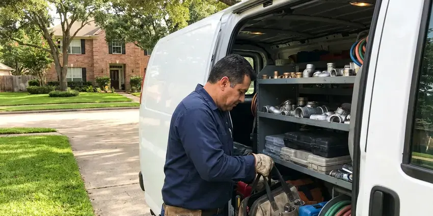

Water Damage Restoration in Blacksburg, VA
Our crews extract standing water, dry your structure with commercial equipment and repair damaged areas in Blacksburg, VA.
- Daily Moisture Readings
- Fast Emergency Response
- Commercial Drying Equipment
- LGR Dehumidifiers

Water on the Floor in Blacksburg, VA? Call Now.
Shut off the main if you can, then call FBN Plumbing and we will take it from there.
Water Damage Restoration in Blacksburg, VA
FBN Plumbing sizes every drying setup to the room. A soaked 12 by 14 bedroom might get three air movers and one LGR dehumidifier, while a flooded finished basement could need eight or ten fans and two dehumidifiers. We go by the numbers. We adjust the equipment as the rooms in your Blacksburg property dry out.
Some of what we do:
- Drywall, baseboard and cabinet removal and replacement after drying
- Structural drying with dehumidifiers, air movers and moisture mapping
- Flood cuts and wall cavity drying

Additional Plumbing Maintenance Services in Blacksburg, VA
Our maintenance and specialty plumbing services in Blacksburg, VA protect your home year-round and extend the life of every system.


Customers
Why Choose FBN Plumbing for Water Damage Restoration in Blacksburg, VA?
Water damage in Virginia homes behaves differently depending on the foundation, the wall type and the time of year. A slab home holds moisture in the concrete for days, while a crawl space home can dry fast or slow depending on the vapor barrier and the vents. We plan for both.
- Same-Day Start, Extraction begins on the first visit, before water soaks further in.
- 24/7 Emergency, Leaks happen at 2 a.m., so we take night and weekend calls.
- Licensed Plumbers, The leak gets repaired by a plumber on our own crew, not a subcontractor.
Citywide Coverage
Wherever you are in Blacksburg, we can usually arrive quickly to stop the water and start drying. We serve homeowners, landlords, HOAs and commercial properties, and each one gets the same daily readings and full documentation from start to finish. Size does not matter.
Experienced Team
The team has restored kitchens, bathrooms, laundry rooms and entire floors after plumbing failures. They know where water travels through slabs, walls and cabinets, and where it hides once the floor dries. We find the wet spots.
Safety-First Approach
Removed materials are disposed of properly, and rebuild work follows local building and plumbing codes. Permits are pulled for repairs that require them, and we schedule the inspections so the work is signed off before you close the claim. Your records stay complete.
Trusted Certified Blacksburg Plumbing Services Professionals
At FBN Plumbing, we are proud to offer certified plumbing services throughout Blacksburg, VA. Credentials matter in this trade. Our plumbers hold recognized industry credentials, and they follow strict safety and quality rules on every repair, installation and maintenance call we run.
Call Us Now PHCC Plumbing Contractor Recognition
PHCC Plumbing Contractor Recognition Better Business Bureau (BBB) Accreditation
Better Business Bureau (BBB) Accreditation Angi Certified Pro
Angi Certified Pro ISO 9001 Quality Management Certification
ISO 9001 Quality Management CertificationExtraction to Rebuild Water Damage Service in Blacksburg, VA
Mold Remediation and Prevention in Blacksburg
Mold needs moisture, food and time. Humid summers and moderate winters are typical for most of Virginia, though mountain areas see colder temperatures and longer heating seasons. Drywall paper and wood framing are plenty of food, so we take away the moisture and the time by drying fast and treating wet surfaces with an EPA-registered antimicrobial. Small spots get cleaned. Larger growth gets contained with plastic and negative air before removal in Blacksburg.

Advanced Leak Detection and Repair in Blacksburg, VA
Water damage often starts with a leak nobody can see. Our technicians in Blacksburg, VA use acoustic sensors, thermal imaging and pressure testing to find the source without opening up walls and floors until they know exactly where to cut. Small holes, not big ones. Then the pipe gets repaired.
Leak Detection and Repair in Blacksburg, VA
Drying a wall that is still being fed by a leak wastes everyone's time. Before drying starts, our plumbers trace the leak with acoustic gear, thermal imaging and pressure tests. Then they repair it. A slab leak, a pinhole in copper or a cracked drain fitting in Blacksburg, VA all get fixed on the same visit when possible.
Slab Leak Water Damage Restoration in Blacksburg, VA
Housing in Virginia spans centuries, from historic homes with cast iron and galvanized pipe to newer subdivisions plumbed with PEX. Under a slab, a pressurized leak can wet flooring and baseboards from below for weeks unnoticed. Watch for warm spots. We locate and repair the leak, often by rerouting the line overhead. Slab drying and flooring removal come next.
Frozen Pipe Water Damage in Blacksburg
Frozen pipes split, then leak hard once they thaw. Higher elevations in the west of Virginia freeze more frequently and harder than coastal areas, so pipe insulation matters more there. Breaks tend to happen in outside walls, attics and crawl spaces, and the water may appear well away from the split. First we locate the break. Copper gets a soldered or press repair, and PEX gets a crimp or expansion fitting.
Structural Drying and Dehumidification in Blacksburg, VA
Air movers push dry air across wet surfaces, and dehumidifiers pull the moisture out of that air. We use low-grain refrigerant units for most jobs and desiccant units for cold spaces or dense materials like hardwood and concrete. Readings come daily. Your Blacksburg, VA home stays on equipment until the framing and subfloor match a dry reference.
Sewer Backup Cleanup in Blacksburg
Sewer water is Category 3, the worst kind, and it changes the whole job. Porous materials that sewage reached, like carpet, pad and drywall, are usually removed because they cannot be cleaned safely. We sanitize what stays. Our crews wear protective gear and clear the blockage in Blacksburg so the backup does not repeat during cleanup.

Water Heater Leak Cleanup in Blacksburg
A failed tank can dump 40 to 75 gallons in minutes. Water hardness in Virginia varies by region, with harder water in the western limestone valleys and softer water closer to the coast. Water from a garage or closet heater often spreads under walls into adjacent rooms, soaking the bottom of drywall and the carpet tack strip. The heater gets replaced. A drain pan goes under the new one when the space allows.
Local Water Damage Restoration Near Me in Blacksburg, VA
Searching for water damage restoration near you in Blacksburg, VA? FBN Plumbing keeps extraction and drying gear on trucks stationed around the area. Short drives help. A crew that arrives in an hour instead of half a day can be the difference between drying a wall in place and cutting it out.
Looking for water damage help near you in Blacksburg, VA? FBN Plumbing has plumbers and restoration techs working out of the same local shop. One call covers both. The plumber fixes the leak while the restoration tech starts extracting, so you are not waiting for one company to finish before the next one shows up.
FBN Plumbing at a Glance
- Fully licensed plumbing team covering Blacksburg, VA
- 24/7 emergency service with same-day scheduling
- Clear written estimates, no hidden fees
- 4.9-star rated by 798+ Virginia customers
Blacksburg Map
Blacksburg Information
- Population
- 45,485
- Area codes
- 540/276/434
- Service area
- Blacksburg and communities within 40 miles
- Nearby
- Roanoke, Lynchburg, Harrisonburg, Charlottesville
Aging water heaters, worn supply lines and hidden pipe leaks are frequent in Blacksburg, VA homes, so fast water damage restoration limits repairs and mold risk.
Expert Services
Call FBN Plumbing for honest, reliable plumbing from people who know the trade in Blacksburg, VA.
Our Specialized Plumbing Services in Blacksburg, VA
At FBN Plumbing, you get every kind of plumbing service from one company across Blacksburg, VA. From leak detection to full system installs, our team works fast and charges fair prices on homes and commercial properties alike. Explore our core services below:


From Wet to Dry: Our Restoration Steps in Blacksburg, VA
Our restoration process moves from stopping the water to drying and rebuilding as fast as possible.
Call Us
Call FBN Plumbing at (434) 230-6997 as soon as you find water. We tell you how to shut off the main and send a crew.
Stop the Leak
Our crew arrives, finds the source and repairs it before drying starts.
Extract
Pumps and extractors pull standing water out of carpet, pad and tile and wood.
Frequently Asked Questions About Water Damage Restoration in Blacksburg
Small single-room restorations with extraction and drying often cost $1,200 to $4,000. Larger jobs with drywall, cabinet and flooring replacement can run $5,000 to $15,000 or more, especially when the water spread across several rooms before anyone found it. Policies often cover it.
Any brand can fail. Common calls include heaters from Rheem and Bradford White, washers from Whirlpool and Samsung, and dishwashers from Bosch and GE. Age matters more than brand.
Many policies cover sudden damage, such as a burst pipe or failed water heater. Slow leaks, neglect and outside flooding are often excluded, so check the exclusions first. Report it promptly.
Sudden and accidental damage is usually covered, such as a pipe burst or a washing machine hose failure. Slow leaks and neglect are often excluded, and outside flooding usually needs a flood policy. We document everything.
Our drying setup includes high-velocity air movers, LGR and desiccant dehumidifiers, and pin and pinless moisture meters. For wall cavities, we use injection drying systems that push air through small holes at the base of the wall, which can save the drywall from being cut. We also use thermal imaging.
Extraction and drying in Blacksburg do not usually need a permit. Permits are typically needed for structural, electrical or plumbing work under local rules. We pull the permits.
Stains on ceilings, bubbling paint and soft spots in the floor are common in Blacksburg homes with hidden leaks. A higher bill, a meter moving with everything off, or a musty room all point to a leak. Have a plumber look.
Mold prevention comes down to speed and dryness. Fast extraction, same-day drying and antimicrobial on wet framing beat the 24 to 48 hour window. Readings confirm it.
What Our Customers Say About Our Plumbing Experts

Marcus H.
Grease from the fryer line kept clogging the kitchen drain at my diner. FBN Plumbing hydro jetted the line after closing, showed me the buildup on camera, and set us up on a quarterly cleaning so it does not catch us on a Friday again.
Drain Cleaning · Richmond, VARobert G.
The camera showed a full break in our clay sewer line near the street. FBN Plumbing replaced it with a trenchless pipe burst, so the only digging was two small pits in the yard. They let us watch the footage before and after.
Sewer Line Replacement · Lynchburg, VA
Sofia M.
Two new toilets went in during one visit. The tech set them on new wax rings and swapped the old supply lines. He also noticed our bathroom faucet dripping and replaced the cartridge while he was there. No mess left behind.
Toilet Installation · Charlottesville, VA
Brian W.
I smelled gas behind the dryer and called right away. The plumber found a corroded flex connector, replaced it, and pressure tested the whole line before turning the gas back on. He let me watch the gauge hold steady for fifteen minutes.
Gas Line Repair · Tuckahoe, VA
Patricia H.
We had a slab leak that two other companies could not find. FBN Plumbing located it in under an hour with a listening device. They rerouted the line through the attic instead of breaking up the floor, so we kept our kitchen tile.
Slab Leak Repair · Roanoke, VAAngela D.
Our sump pump quit during a storm and the water was an inch from the basement carpet. FBN Plumbing put in a new pump with a battery backup that same evening. We have had two heavy rains since. It kicked on both times.
Sump Pump · Roanoke, VA